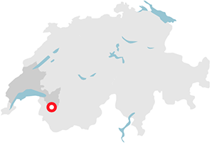
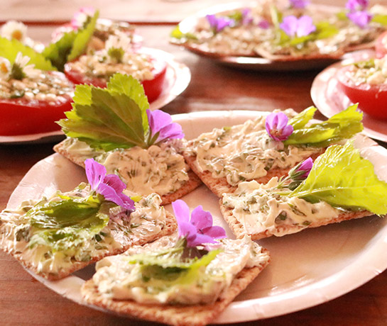
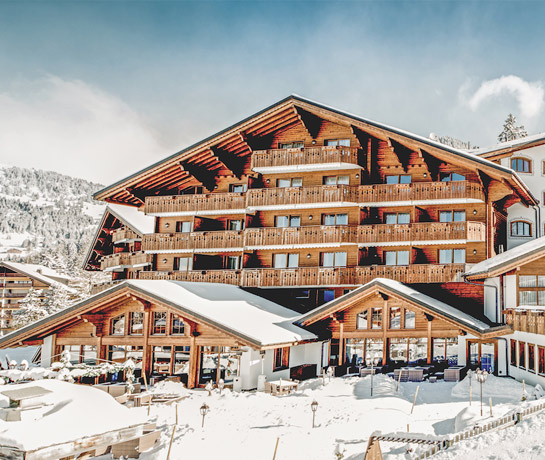
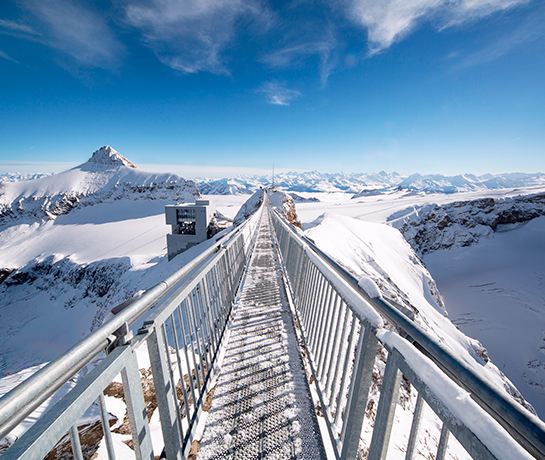
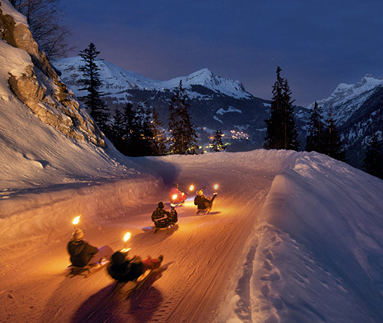
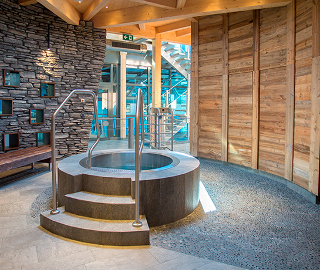

<!DOCTYPE html>
<html lang="ru">
  <head>
    <meta charset="UTF-8"/>
    <meta content="" name="description"/>
    <meta content="" name="keywords"/>
    <meta http-equiv="X-UA-Compatible" content="ie=edge"/>
    <meta content="telephone=no" name="format-detection"/>
    <meta name="HandheldFriendly" content="true"/>
    <meta name="viewport" content="width=device-width, initial-scale=1.0"/>
    <meta property="og:url" content="http://switzerland.inbase.me/index.html"/>
    <meta property="og:type" content="website"/>
    <meta property="og:title" content="Мне нужна Швейцария"/>
    <meta property="og:description" content="Мне нужна Швейцария"/>
    <meta property="og:image" content="http://switzerland.inbase.me/img/main/alech-1.jpg"/>
    <title>Виллар</title>
    <link href="https://fonts.googleapis.com/css?family=Montserrat:400,500,700,800&amp;display=swap&amp;subset=cyrillic" rel="stylesheet"/>
    <link rel="stylesheet" href="css/style.min.css"/>
    <link rel="icon" type="image/x-icon" href="favicon.ico"/>
    <script type="text/javascript" src="https://vk.com/js/api/share.js?93" charset="windows-1251"></script>
    <script async="async" defer="defer" crossorigin="anonymous" src="https://connect.facebook.net/ru_RU/sdk.js#xfbml=1&amp;version=v5.0"></script>
  </head>
  <body class="page">
    <div class="page__wrapper">
      <header class="header">
        <div class="header__box">
          <div class="header__left"><a class="header__home-link" href="./index.html">На главную</a>
          </div>
          <div class="header__shares">
            <div class="header__share-link header__share-link--vk" id="vk_share_button"></div><a class="fb-share-button header__share-link header__share-link--fb fb-xfbml-parse-ignore" target="_blank" href="https://www.facebook.com/sharer/sharer.php?u=http%3A%2F%2Fswitzerland.inbase.me%2Findex.html&amp;amp;src=sdkpreparse" data-layout="simple"></a><a class="header__share-link header__share-link--w" href="https://web.whatsapp.com/send?text=www.google.com" target="__blank" data-action="share/whatsapp/share"></a>
          </div>
        </div>
      </header>
      <section class="welcome js-welcome" style="background-image: url(&quot;img/welcome/3.jpg&quot;)">
        <button class="welcome__close-video js-close-video" type="button"><span></span><span></span></button>
        <div class="welcome__video-block js-video">
          <iframe title="vimeo-player" src="https://player.vimeo.com/video/336812660" width="640" height="360" frameborder="0" allowfullscreen="allowfullscreen"></iframe>
        </div>
        <div class="welcome__section js-welcome-section">
          <h3 class="welcome__section-name">Виллар</h3>
          <p class="welcome__section-text">Мне нужен релакс. <br/> Мне нужна Швейцария</p>
          <p class="welcome__person-name">Виталий Истомин</p>
          <p class="welcome__person-activity">Шеф-повар ресторана «Сахалин» и гастробистро «Техникум», автор книги «Нескучная еда»</p>
        </div>
      </section>
      <section class="form__wrapper">
        <div class="container">
          <h3 class="form__title">Подпишитесь, чтобы получить выгодные предложения по&nbsp;отдыху в&nbsp;Швейцарии</h3>
          <form class="form js-form" action="index.php" method="POST">
            <div class="form__box">
              <input class="form__input js-mail" type="email" name="email" placeholder="E mail" required="required"/>
              <input class="form__input js-name" type="text" name="name" placeholder="Имя"/>
              <input class="form__input js-page" type="hidden" value="Церматт" name="page"/>
              <button class="form__submit" type="submit">Подписаться</button>
            </div>
            <div class="form__info">Нажимая кнопку «Подписаться», вы даёте <a class="form__info-link" href="#" target="__blank">согласие на обработку персональных данных</a> и получение информационной рассылки.</div>
          </form>
        </div>
      </section>
      <section class="info">
        <div class="container container--info">
          <div class="info__left">
            <h2 class="info__title">Виллар — стильный курорт с атмосферой, располагающей к наслаждению</h2>
            <p class="info__text">Виллар находится недалеко от Женевского озера, всего в 1,5 часах от Женевы.  Отличная зона катания, пожалуй, самая живописная в Западной Швейцарии, превосходные рестораны, уютные отели – одним словом, все, что требуется для отличного отдыха. А оживленный рынок (он открыт не только на Рождество!) и зажигательное apres-ski добавляют очарования курорту. </p>
            <p class="info__text">Сделайте передышку и почувствуйте Швейцарию на вкус!</p>
          </div>
          <div class="info__right"></div>
        </div>
        <div class="info__bottom" style="background-image: url('img/info/villar-bg.jpg')">
          <p class="info__bottom-title">Настоящий релакс для непосед</p>
        </div>
      </section>
      <section class="main">
        <h2 class="main__title">Почему Виллар?</h2>
        <div class="main__box owl-carousel">
          <div class="main__section main__section--odd">
            <div class="main__first">
              <h3 class="main__first-title">Палитра вкусов</h3>
              <p class="main__first-text">Устрицы с шампанским на рождественском рынке или рёшти в горном ресторане? Или может быть что-то необычное в уютном шале прямо у трассы? Фондю, раклет, блюда высокой кухни, филе озерного окуня или жаркое из ягнёнка с горными травами – в Вилларе гурманы непременно найдут себе любимое место. Среди лучших ресторанов над курортом – Restaurant du Lac des Chavonnes, Café-Restaurant l’Etable, Auberge Du Col de Soud. И не стоит забывать про отличное местное вино – за пределами Швейцарии его не найти.</p>
            </div><a class="main__second"></a>
          </div>
          <div class="main__section main__section--even">
            <div class="main__first">
              <h3 class="main__first-title">Отель Chalet RoyAlp Hotel & Spa </h3>
              <p class="main__first-text">За гастрономическими радостями в самом Вилларе стоит отправиться в ресторан отеля Chalet RoyAlp Hôtel & Spa – недавно его шеф-повар получил звезду Michelin. Элегантная классическая кухня с французским акцентом, завораживающий вид с террасы и уютный бар для дижестива – это, пожалуй, идеальное место для особого случая. Бонус для горнолыжников: в отель можно вернуться прямо на лыжах, а просторный спа-центр с бассейном позволит быстро восстановить силы.</p>
            </div><a class="main__second"></a>
          </div>
          <div class="main__section main__section--odd">
            <div class="main__first">
              <h3 class="main__first-title">Вид сверху</h3>
              <p class="main__first-text">Страшно? Да, есть немного, но всплеск адреналина перекрывает страх высоты. Tissot Peak Walk – единственный в мире подвесной мост, связывающий две вершины, находится над Ле Дьяблере, на высоте более 3000 метров. Несколько лет назад на леднике Glacier 3000 открыли мост длиной 107 метров – отличное место для того, чтобы полюбоваться Альпами и делать умопомрачительные фотографии с видом на легендарные вершины.</p>
            </div><a class="main__second"></a>
          </div>
          <div class="main__section main__section--even">
            <div class="main__first">
              <h3 class="main__first-title">В погоне за адреналином</h3>
              <p class="main__first-text">Хочется чего-то необычного? Тогда можно пересесть на санки, чтобы прокатиться по живописной 7-километровой трассе над Ле Дьяблере. Или погрузиться в совершенно сказочную атмосферу, отправившись за адреналином после захода солнца: 4 раза в неделю подъемник Diablerets Express и длинная освещаемая трассы открыты с 18:30 до 21:00.</p>
            </div><a class="main__second"></a>
          </div>
          <div class="main__section main__section--odd">
            <div class="main__first">
              <h3 class="main__first-title">Вкус к жизни</h3>
              <p class="main__first-text">После наполненного впечатлениями дня особенно приятно погрузиться в джакузи или тёплый бассейн на улице, чтобы любоваться величественными Альпами прямо из воды. В Les Bains de Villars можно не только поплавать, но и побаловать себя массажем, погреться в сауне или хаммаме, чтобы вернуться в отель совершенно обновленным.</p>
            </div><a class="main__second"></a>
          </div>
        </div>
        <div class="main__socials"><a class="main__social-link main__social-link--fb" href="#" target="_blank"></a><a class="main__social-link main__social-link--inst" href="#" target="_blank"></a></div>
      </section>
      <footer class="footer">
        <h3 class="footer__title">Узнайте о других направлениях</h3>
        <div class="footer__slider owl-carousel">
          <div class="footer__slider-item" style="background-image: url(&quot;img/footer/alech.jpg&quot;)"></div>
          <div class="footer__slider-item" style="background-image: url(&quot;img/footer/cermatt.jpg&quot;)"></div>
          <div class="footer__slider-item" style="background-image: url(&quot;img/footer/davos.jpg&quot;)"></div>
          <div class="footer__slider-item" style="background-image: url(&quot;img/footer/lucern.jpg&quot;)"></div>
        </div>
        <div class="footer__breadcrumbs"><a class="footer__breadcrumb" href="./alech.html" data-id="0">Алеч арена</a><a class="footer__breadcrumb" href="./cermatt.html" data-id="1">Церматт</a><a class="footer__breadcrumb" href="./davos.html" data-id="2">Давос Клостерс</a><a class="footer__breadcrumb" href="./lucern.html" data-id="3">Люцерн</a>
        </div><a class="footer__link" href="#" target="_blank">Пользовательское соглашение</a>
      </footer>
    </div>
    <div class="beforeBodyEnd" style="display: none">
      <script src="js/app.min.js"></script>
    </div>
  </body>
</html>